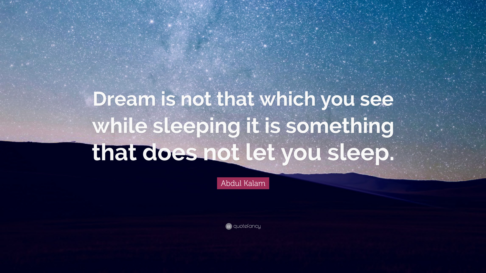

Avul Pakir Jainulabdeen Abdul Kalam 15 October 1931 – 27 July 2015) was an Indian aerospace scientist who served as the 11th President of India from 2002 to 2007. He was born and raised in Rameswaram, Tamil Nadu and studied physics and aerospace engineering. He spent the next four decades as a scientist and science administrator, mainly at the Defence Research and Development Organisation (DRDO) and Indian Space Research Organisation (ISRO) and was intimately involved in India's civilian space programme and military missile development efforts. He thus came to be known as the Missile Man of India for his work on the development of ballistic missile and launch vehicle technology. He also played a pivotal organisational, technical, and political role in India's Pokhran-II nuclear tests in 1998, the first since the original nuclear test by India in 1974.
Kalam was elected as the 11th President of India in 2002 with the support of both the ruling Bharatiya Janata Party and the then-opposition Indian National Congress. Widely referred to as the "People's President", he returned to his civilian life of education, writing and public service after a single term. He was a recipient of several prestigious awards, including the Bharat Ratna, India's highest civilian honour.
While delivering a lecture at the Indian Institute of Management Shillong, Kalam collapsed and died from an apparent cardiac arrest on 27 July 2015, aged 83. Thousands, including national-level dignitaries, attended the funeral ceremony held in his hometown of Rameswaram, where he was buried with full state honours.
Kalam's writing
-
Developments in Fluid Mechanics and Space Technology by A P J Abdul Kalam and Roddam Narasimha; Indian Academy of Sciences, 1988
- India 2020: A Vision for the New Millennium by A P J Abdul Kalam, Y. S. Rajan; New York, 1998.
- Wings of Fire: An Autobiography by A P J Abdul Kalam, Arun Tiwari; Universities Press, 1999.
- Ignited Minds: Unleashing the Power Within India by A P J Abdul Kalam; Viking, 2002.
- The Luminous Sparks by A P J Abdul Kalam, by; Punya Publishing Pvt Ltd., 2004.
- Mission India by A P J Abdul Kalam, Paintings by Manav Gupta; Penguin Books, 2005
- Inspiring Thoughts by A P J Abdul Kalam; Rajpal & Sons, 2007
- Indomitable Spirit by A P J Abdul Kalam; Rajpal and Sons Publishing
Envisioning an Empowered Nation by A P J Abdul Kalam with A Sivathanu Pillai; Tata McGraw-Hill, New Delhi
- You Are Born To Blossom: Take My Journey Beyond by A P J Abdul Kalam and Arun Tiwari; Ocean Books, 2011
- Turning Points: A journey through challenges by A P J Abdul Kalam; Harper Collins India, 2012.
- Target 3 Billion by A P J Abdul Kalam and Srijan Pal Singh; December 2011 | Publisher Penguin Books.
- My Journey: Transforming Dreams into Actions by A P J Abdul Kalam; 2014 by the Rupa Publication.
- A Manifesto for Change: A Sequel to India 2020 by A P J Abdul Kalam and V Ponraj; July 2014 by Harper Collins.
- Forge your Future: Candid, Forthright, Inspiring by A P J Abdul Kalam; by Rajpal and Sons, 29 October 2014.
- Reignited: Scientific Pathways to a Brighter Future by A P J Abdul Kalam and Srijan Pal Singh; by Penguin India, 14 May 2015.
- Transcendence: My Spiritual Experiences with Pramukh Swamiji by A P J Abdul Kalam with Arun Tiwari; HarperCollins Publishers, June 2015
- Advantage India: From Challenge to Opportunity by A P J Abdul Kalam and Srijan Pal Singh; HarperCollins Publishers,15 Oct 2015.
Awards and Honours
| Year of Award or Honour |
Name Of Award or Honour |
Awarding Organisation |
| 2014 |
Honarary Professor |
Beijing University, China |
| 2014 |
Doctor of Science |
Edinburgh University, UK |
| 2013 |
Von Braun Award |
National Space Society |
| 2012 |
Doctor of Laws (Honoris Causa) |
Simon Fraser University |
| 2011 |
Doctor of Engineering |
University of Waterloo |
| 2010 |
Honorary Doctorate |
Oakland University |
| 2009 |
Hoover Medal |
ASME Foundation, USA |
| 2009 |
International von Kármán Wings Award |
California Institute of Technology, USA |
Read more about Dr. APJ Abdul Kalam on Wikipedia